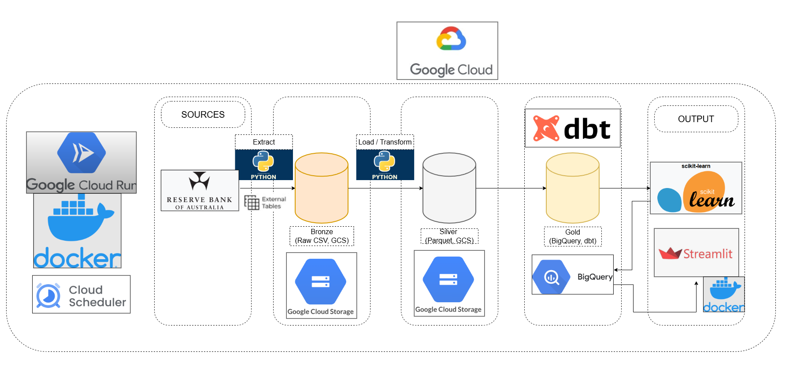
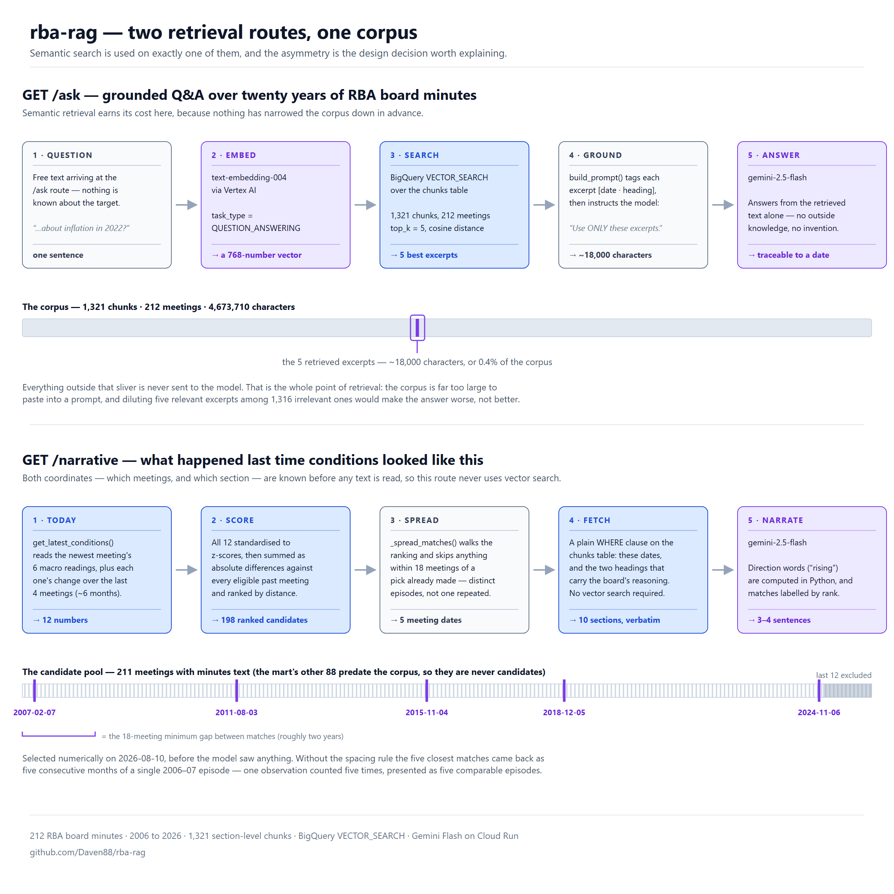
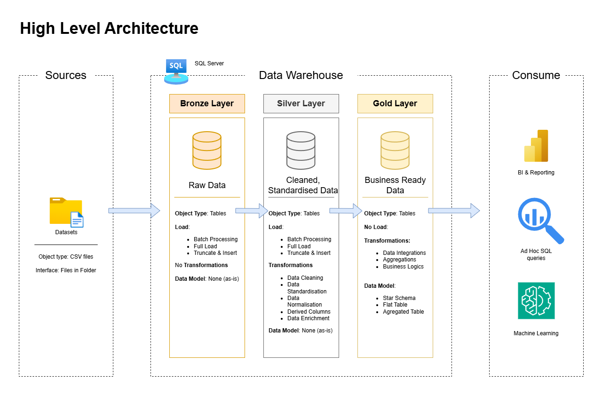

Using Quantified Voice Patterns to Diagnose Parkinson's Disease
This project involved data exploration and the use of both unsupervised and supervised learning algorithms to aid in the diagnosis of Parkinson's disease.

I build data pipelines and warehouse models that people actually run against. Eight years in regulated pharmaceutical manufacturing — analytical chemistry through to QC supervision and master data — taught me what happens when data is wrong, and that has shaped how I engineer it.
My current work is data engineering on Google Cloud: batch ingestion into BigQuery, medallion and dimensional layers managed with dbt, containerised jobs on Cloud Run, data tests that catch bad data before it reaches a dashboard, and unit tests that gate deployment in CI. I care about pipelines that are idempotent, documented, and cheap to operate.
Based in Melbourne. Master of Data Science (James Cook University).
An end-to-end batch pipeline that ingests Reserve Bank of Australia rate decisions and six macroeconomic series into BigQuery through bronze, silver and gold layers, with dbt managing the transformations and 57 data tests covering every layer. Classification models predict the direction of the next rate move, and a Streamlit dashboard on Cloud Run surfaces that prediction alongside current economic conditions.

Originally orchestrated with Airflow in Docker, then migrated to a containerised Cloud Run Job triggered by Cloud Scheduler and gated on the RBA meeting calendar — managed Airflow would have cost roughly $450 per run for a pipeline that runs eight times a year. There are no service account keys anywhere in the system.
Python · BigQuery · dbt · Cloud Run · Cloud Scheduler · Docker · scikit-learn
A retrieval system over two decades of RBA board meeting minutes. The corpus is chunked and embedded, with BigQuery serving as both storage and the retrieval layer — no separate vector database, which keeps the operating surface small at this corpus size. Given the current economic setting, it surfaces the historically comparable meetings and the distances between them, excluding the most recent eighteen months so the result is a genuine historical analogue rather than an echo of the last few decisions.

Deployed by GitHub Actions on every push to main: pytest runs first and the build is gated on it, then the image is pushed and released to Cloud Run. Authentication to GCP uses Workload Identity Federation, so no service account key ever leaves the repository.
Python · BigQuery vector search · FastAPI · Cloud Run · GitHub Actions · pytest · Workload Identity Federation
A bronze–silver–gold warehouse built in T-SQL over a retail dataset, with stored ETL procedures moving data through each layer into a star schema designed for analytical querying. Extended with VADER sentiment scoring over customer reviews and product descriptions, surfaced through a Power BI dashboard alongside sales and product performance metrics.

T-SQL · Medallion architecture · Star schema · Python (VADER/NLTK) · Power BI
Written up as reports during my Master of Data Science. Each covers the full path from exploration through to model evaluation.

This project involved data exploration and the use of both unsupervised and supervised learning algorithms to aid in the diagnosis of Parkinson's disease.

This project applies Natural Language Processing (NLP) and machine learning to analyse book reviews related to Autism. It identifies sentiment patterns and builds a classification model, offering insights into public perception.

This project uses Neural Networks and XGBoost to forecast Australia's unemployment rate, addressing challenges such as multicollinearity and economic shocks.
I work across the path from raw source to the table an analyst queries — ingestion, modelling, orchestration and the tests that keep it trustworthy.
Batch ingestion, medallion architecture, dimensional modelling to Kimball, dbt transformations, orchestration and scheduling.
GCP — BigQuery, Cloud Run, Cloud Scheduler, Artifact Registry, Cloud Storage. Docker, GitHub Actions, Workload Identity Federation and keyless service-account authentication.
Advanced SQL, semantic and reporting layers, Power BI, Looker Studio, Streamlit applications for internal users.
Classification and forecasting with scikit-learn and XGBoost. Model evaluation, handling class imbalance, NLP and retrieval systems.
Python, SQL, R, Git, VS Code, SAP ECC and SAP BW, Claude Code and the Anthropic SDK.
Eight years in GxP/GMP pharmaceutical manufacturing — data governance, master data, validation and audit requirements.
I'm open to data engineering, analytics engineering and data science roles in Melbourne. Happy to talk through any of the projects above, or anything you're building.